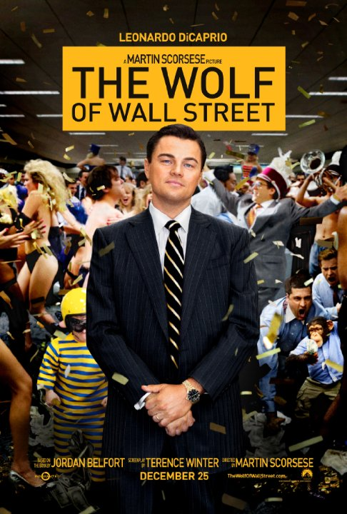
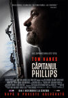
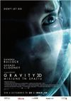

Acest site este dedicat cinematografiei. Cu ajutorul lui veti putea gasi informatii despre cele mai noi filme sau despre cei mai iubiti actori ai zilelor noastre. Pentru a va putea abona apasati click pe butonul "Inregistrare" din dreapta sus.
The Wolf of Wall Street
Bazat pe o poveste reala ce il are in centru pe Jordan Belfort, de la ascensiunea acestuia si traiul lui intr-o societate cu pretentii ridicate, la decaderea lui ce implica abuzul, coruptia si chiar guvernul federal.
Filmul dispune de o distributie foarte bine aleasa, avand actori precum: Leonardo DiCaprio, Jonah Hill, Margot Robbie.
Pentru a va putea face o idee despre film, apasati pe linkul de mai jos si veti fi dus pe o pagina de youtube ce va reda trailer-ul acestui film.
Regia: Peter Jackson
Cu: Ian McKellen,
Martin Freeman,
Richard Armitage,
Benedict Cumberbatch
Gen film: Aventuri, Drama, Fantastic
Regia: Alan Taylor Cu: Chris Hemsworth, Natalie Portman, Anthony Hopkins, Tom Hiddleston, Idris Elba Gen film: Actiune, Aventuri, Fantastic
 Captain PhillipsRegia: Paul Greengrass Cu: Tom Hanks, Catherine Keener, Barkhad Abdirahman Gen film: Biografic, Crima, Drama, Thriller
 GravityRegia:Alfonso Cuaron Cu:Sandra Bullock, George Clooney Gen film: SF, Thriller